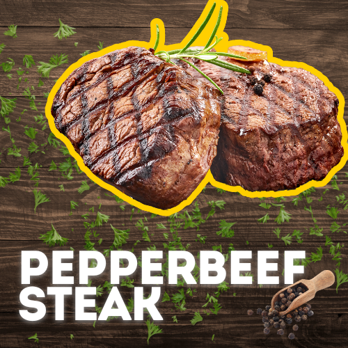

Carbonara
Ingredients:
- 400g spaghetti or pasta of your choice
- 200g pancetta or bacon, diced
- 3 large eggs
- 100g grated Parmesan cheese
- 50g grated Pecorino cheese (optional for extra flavor)
- 2 cloves garlic, minced
- 1 cup heavy cream (for extra creaminess, optional)
- Salt and freshly ground black pepper to taste
- Fresh parsley, chopped (for garnish)
- Extra grated Parmesan for serving
Instructions:
- Cook the pasta until al dente, reserving 1 cup of pasta water.
- Cook the pancetta or bacon in a skillet until crispy, then add minced garlic.
- Whisk together eggs, grated cheeses, and (optional) heavy cream. Season with salt and pepper.
- Combine pasta with pancetta in the skillet. Slowly stir in the egg mixture, adding pasta water if needed to achieve a creamy consistency.
- Serve immediately, garnished with fresh parsley and extra Parmesan.

Pepper Beef Steak
Ingredients:
- 500g beef steak (such as sirloin or ribeye)
- 2 tablespoons black peppercorns
- 1 tablespoon vegetable oil
- 3 tablespoons soy sauce
- 2 tablespoons oyster sauce
- 2 tablespoons Worcestershire sauce
- 2 cloves garlic, minced
- 1 small onion, finely chopped
- 1 tablespoon cornstarch
- 1/4 cup beef broth
- Salt to taste
- Fresh parsley for garnish (optional)
Instructions:
- Season and cook the steak: Season with salt and pepper, then cook in a hot skillet with oil to your preferred doneness. Set aside.
- Make the sauce: Sauté garlic and onion in the same skillet, then add soy sauce, oyster sauce, Worcestershire sauce, and beef broth. Thicken with cornstarch slurry.
- Combine and serve: Slice the steak, add it back to the skillet with the sauce, and cook briefly. Garnish with parsley if desired. Serve over rice or with your favorite sides.